Documentation
Everything you need!
Japanese version can be found here https://nedb.co/the-ifme-project/ (by Nemu)
Navigate
Salih Aku: I use medium preset with CRF-22 for batch recoding old low quality series, I set it something between 25-28 if they are animation/cartoon. I don't convert audio stream simply copy that.
Since they are old, they don't really look any worse but medium preset is like 10 times faster than slow preset. It is useful when I convert hundreds of files.
But I'll stick with slower presets when I convert new videos since slow and slower presets are better at motion detection. I guess it has something to do with different algorithm but It is exhausting for CPU.
I sense that CRF setting is like balance between bitrate and quality. somehing between 20-30 depending on how much detail you want. Higher value means lesser detail but more compression. I think it doesn't effect encoding speed that much like selecting presets.
So shortly in my opinion CRF 20-24 for movies 25-28 for cartoons.
"Medium" for quick encoding and old stuff, "slower" for neat encoding and HQ videos. This is my taste. You should try a few samples and decide.
I'm not strict with bitrate. But I'd simply choose 40-45% of original DivX bitrate or 60% of h264. I wouldn't go any lower as recoding from already compressed source.
Tushar Sharma: CRF actually means the lowest the quality will drop to as perceived by the computer (not Human). At slower presets, psycho-visual optimisations are enabled, which produce better quality as perceived by Humans (more detail in complex areas).
IFME was designed to be "simple to use". The GUI looks similar to tools like HandBrake, x264vfw, MeGUI etc. The basics are explained below.
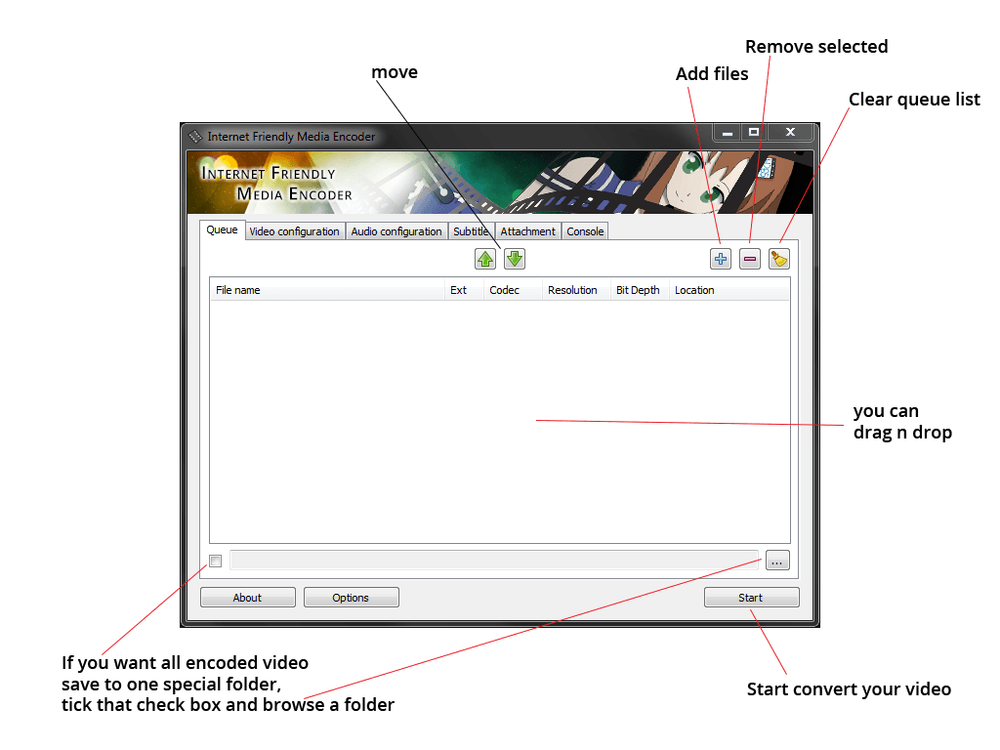
Video and Audio configuration is pretty straight forward and self-explanatory.
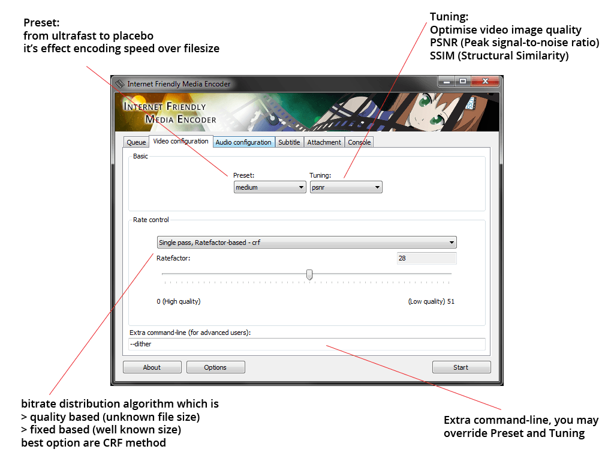
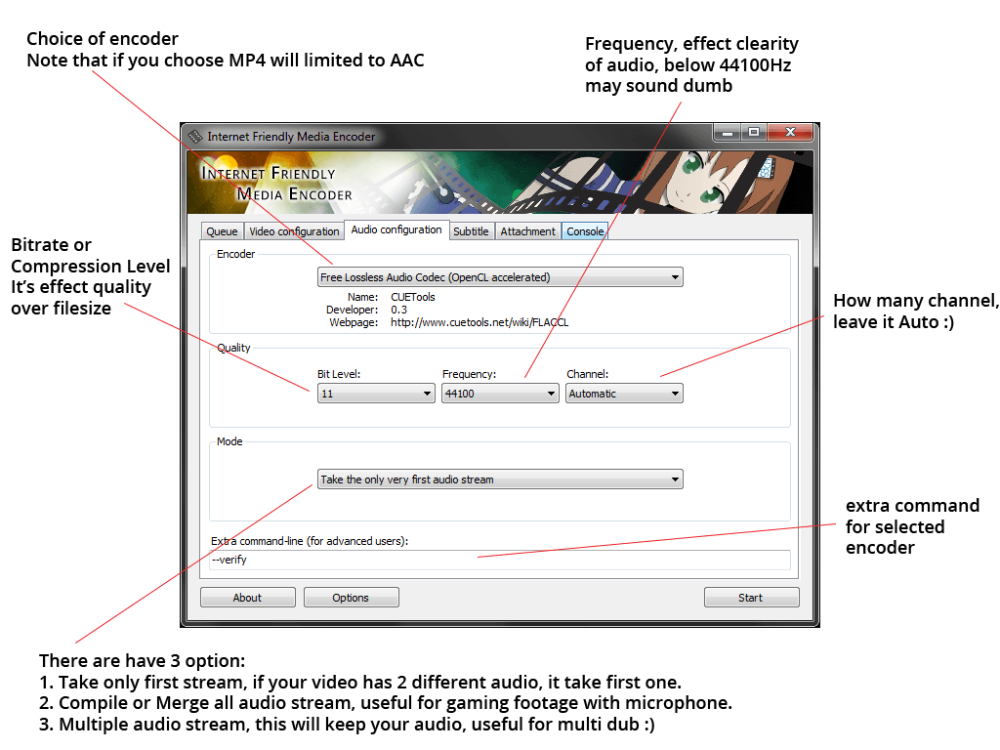
Currently, only one subtitle track per video is supported.
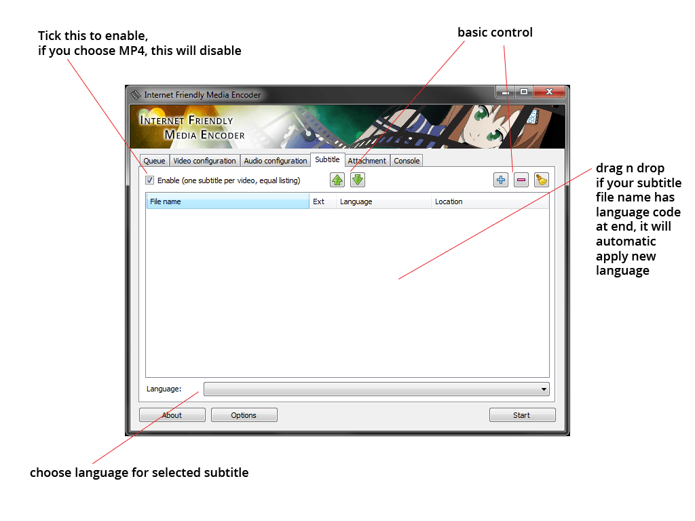
Add your own custom font as an attachment.
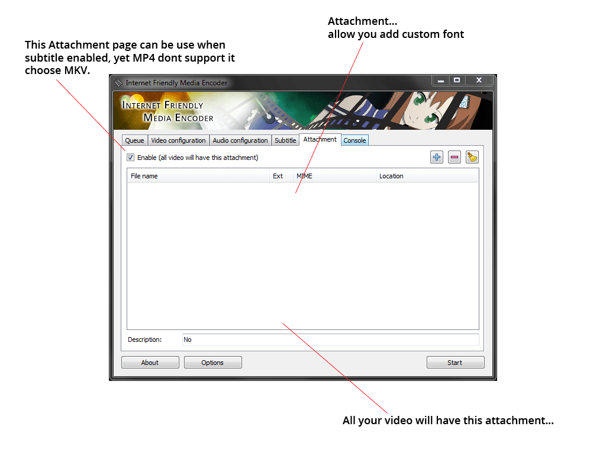
Add-ons
Currently, IFME only supports add-ons for the audio encoder. Follow this guide line to create a simple one.
- First, go to your installation folder (i. e.: 'C:\\Programs\Internet Friendly Media Encoder\addons') and create a subfolder, for example "mp3".
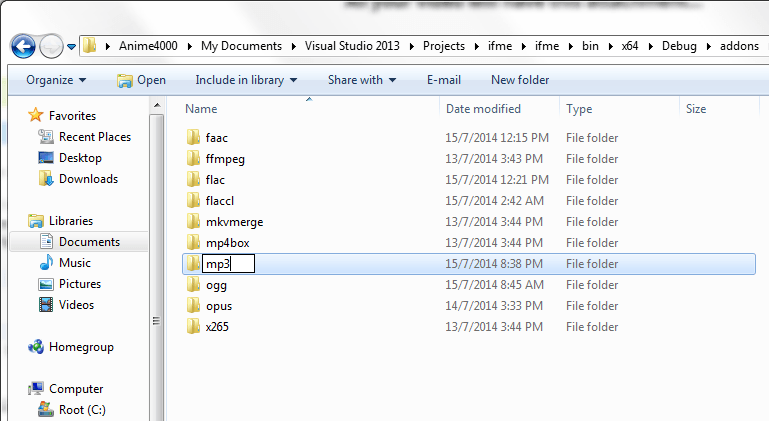
- Download this sample INI file and save it to your "mp3" folder.
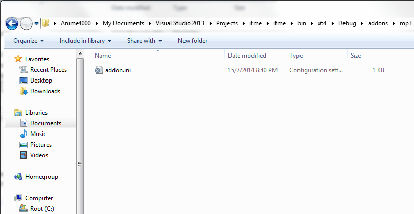
- Download a command-line encoder, for now we are going to use LAME (remember, we need a binary).
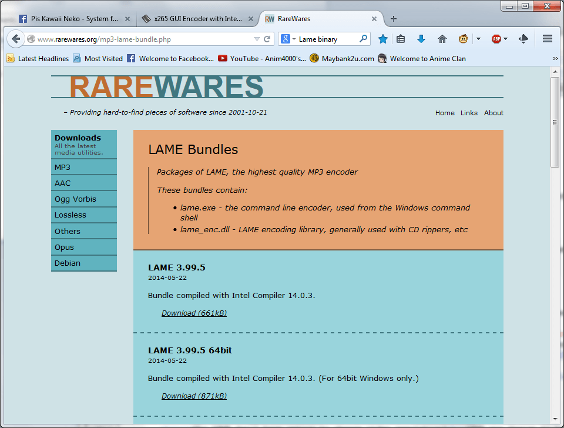
- Extract everything to your MP3 add-on folder (i.e. '.\addons\mp3\').
- Hold Shift and right-click somewhere in the free space of the folder. Proceed to choose 'Open command window here'.
- Type "lame.exe --help" without quotation marks. This will display available basic commands.
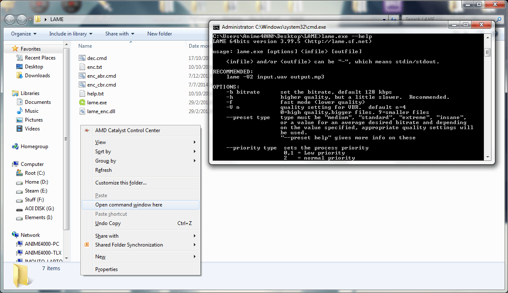
- For example, LAME require: lame.exe -b 128 "in_file.wav" "out_file.mp3"
- Open "addon.ini" file with your favourite Notepad and Edit:
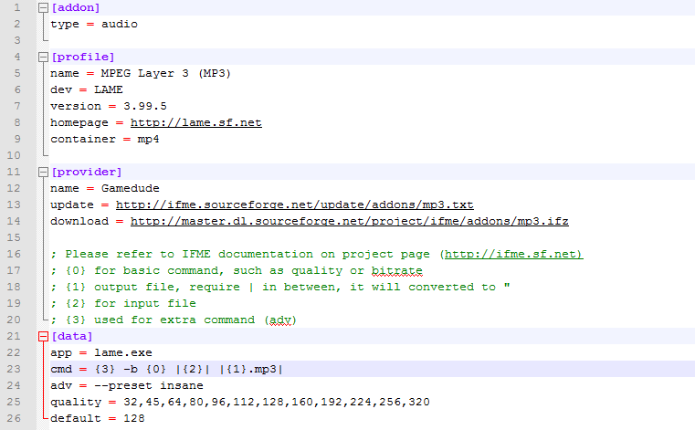
- Fill all, (you need a web server that can host, try dropbox web hosting (http://my.droppages.com/)
☒ type = audio (obviously)
☒ Profile, pretty basic info for encoder, that container showing that which container support, MP4 or MKV (type in lower case)
☒ Provider, name = enter your name.
☒ update = a HTTP url path that contain latest version, a txt file only contain version, refer to [profile]
☒ download = a HTTP url path that IFME will download if txt contain latest version.
☒ Data, app = a exe file name,
☒ cmd = a basic command, place holder: "{0}" holds LAME MP3 bitrate, "|{1}.mp3|" output file, "|{2}|" input file, "{3}" extra command that refer from "adv" below.
☒ quality = enter a valid bitrate value
☒ default = choose the best bitrate value
- Once done, save it. Go back addons folder and start "zip" your mp3 addon (no rar or 7z)
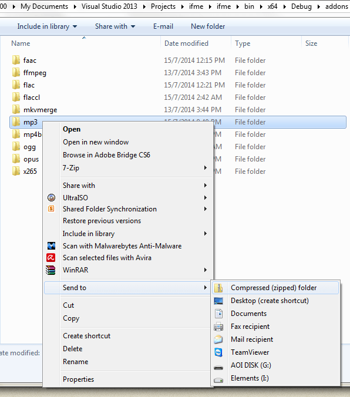
- You may rename the file and extension to "mp3byme.ifz" (.ifz is extension that FIME understand)
- Publish it... You can submit to Facebook page to get listed at our website... and yet submission need to be approved before become official. (check if this addon is working or not)
Help
- Why is there no option to change video resolution?
IFME was designed to keep the video as close to the original as possible. If you want to resize your video, use AviSynth. Increasing resolution (also knows as 'up-scaling') will result in poor video quality.
- The latest IFME release doesn't have an option to change video bit depth. Why is that?
While 10bit to 8bit conversion seems acceptable, the resulting file will be larger than the original. Converting 8bit to 10bit will not result in better video quality. If you insist on converting your video in terms of video bit depth, use x264 instead.
- Why is there no option to change video FPS?
Increasing or decreasing FPS will result in choppy playback. Always use original/source FPS.
- Can I encode my game recording?
Yes, you can. So far the video decoder only accepts input from FRAPS, using AMD Gaming Evolved or nVidia Shadow Play to capture your gaming may cause errors.
- Why can't I upload my videos to YouTube or Facebook?
H.265/HEVC is still a new codec and development is an ongoing process, YouTube or Facebook are still using H.264/AVC for encoding user uploads. This might change in the future, however and H.265/HEVC might be supported.
- Why is there a 'one subtitle per video' restriction?
It keeps things simple to use, if you want to add more subtitle tracks, use MKVToolnix.
- Why doesn't MP4 accept subtitles?
MP4 container is very limited, basically it only supports SRT subtitles. Use MKV instead, it is much more versatile.
- Why does encoding take so long?
Much like x264, HEVC needs a lot more resources than XviD or MPEG-2. CPU power is crucial for encoding purposes. For best results, make sure you have at least a dual-core CPU, quad-core or higher will reduce encoding time significantly.